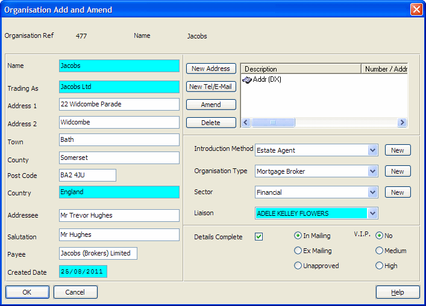

| Field Name | Data Type | Description |
| Unique identifier for organisation (system generated) | ||
| Organisation name | ||
| Address - Line 1 | ||
| Address - Line 2 | ||
| Address - Town | ||
| Address - County | ||
| Address - Postcode | ||
| Import date/time (from Contact Import utility) | ||
| Reserved for future use | ||
| Market exclude flag - "Y" = Exclude, "N" = Include, "U" = Unapproved | ||
| Introduction method code | ||
| Reserved for future use | ||
| Reserved for future use | ||
| Reserved for future use | ||
| Date created | ||
| Set to "Client" if contact is a client | ||
| ORG-REFERENCE field in string format | ||
| Organisation identification - Category 1 notes | ||
| Reserved for future use | ||
| Notes | ||
| Liaison/partner (fee earner code) | ||
| Details complete flag | ||
| All address field values combined into one field (for search purposes) | ||
| Organisation "Trading As" name | ||
| Addressee | ||
| Formal salutation | ||
| VIP status: "H"=High, "M"=Medium, "N"=No | ||
| Business sector code | ||
| Solcase ID (generated by SOLCASE) | ||
| Set to "C" if record amended | ||
| Reserved for future use | ||
| Derived: Last Modified Date | ||
| Reserved for future use | ||
| Derived: Last Modified Time (seconds past midnight) | ||
| VAT registration number | ||
| Derived: Last Modified User Id | ||
| Reserved for future use | ||
| Reserved for future use | ||
| Address - Country | ||
| Payee name | ||
| Company number | ||
| Organisation identification - Category 1 ID | ||
| Organisation identification - Category 1 Reference | ||
| Organisation identification - Category 1 Date | ||
| Organisation identification - Category 1 User ID | ||
| Organisation identification - Category 1 ID Scanned | ||
| Organisation identification - Category 1 Original location | ||
| Reserved for future use | ||
| Reserved for future use | ||
| Reserved for future use | ||
| Reserved for future use | ||
| Reserved for future use | ||
| Reserved for future use | ||
| Organisation identification - MLRO | ||
| Organisation identification - MLRO Action | ||
| Organisation identification - Set if Referred to MLRO ticked | ||
| Organisation identification - Date in Referral to MLRO panel | ||
| Organisation identification - User ID of Referred By | ||
| Organisation identification - Reason in Referral to MLRO panel | ||
| Organisation identification - Set if Referred to NCIS ticked | ||
| Organisation identification - Date next to NCIS-REFERRAL | ||
| Organisation identification - Set if Cleared by NCIS ticked | ||
| Organisation identification - Date in Referral to NCIS panel | ||
| Organisation identification - Comment in Referral to NCIS panel | ||
| Organisation identification - Set if Able to Act ticked | ||
| Organisation identification - Notes | ||
| Reserved for future use | ||
| Reserved for future use | ||
| Holds "old system" reference for organisations converted from another system (for auditing purposes) | ||
| Reserved for future use | ||
| Reserved for future use | ||
| Consent notes | ||
| Reserved for future use | ||
| Reserved for future use | ||
| Reserved for future use | ||
| Reserved for future use | ||
| Reserved for future use | ||
| Reserved for future use | ||
| Reserved for future use | ||
| Date consent given | ||
| Reserved for future use | ||
| Reserved for future use | ||
| Reserved for future use | ||
| Reserved for future use | ||
| Reserved for future use | ||
| Reserved for future use | ||
| Reserved for future use | ||
| Reserved for future use | ||
| Reserved for future use | ||
| Reserved for future use | ||
| Reserved for future use | ||
| Reserved for future use | ||
| Reserved for future use | ||
| Witness Stat/Spec | ||
| Cat 1 Expiry Date | ||
| Cat 2 Expiry Date | ||
| Date Redacted | ||
| Never Redact | ||
| Access Group Override |
| Index Name | Is Primary? | Is Unique? | Word Indexed? | Database Fields |
| AUDIT | MOD-DATE + MOD-TIME | |||
| CLIENT-FLAG | CLIENT-FLAG | |||
| CONVERTED-ID | CONVERTED-ID | |||
| DATE-REDACTED | DATE-REDACTED | |||
| IMPORT-DATETIME | IMPORT-DATETIME | |||
| ORG-DERIVED-ADDRESS-INX | ORG-DERIVED-ADDRESS | |||
| ORG-DETAILS-COMPLETE | ORG-DETAILS-COMPLETE | |||
| ORG-INTRO-METHOD-INX | ORG-INTRODUCTION | |||
| ORG-LOADED-DATE | ORG-LOADED-DATE | |||
| ORG-MARKET-EXCLUDE-INX | ORG-MARKET-EXCLUDE | |||
| ORG-NAME-INX | ORG-NAME | |||
| ORG-NOTES-INX | ORG-NOTES | |||
| ORG-PARTNER-INX | ORG-PARTNER | |||
| ORG-REF-INX | ORG-REFERENCE | |||
| ORG-SC-ID-INX | ORG-SC-ID | |||
| ORG-SECTOR-INX | ORG-SECTOR | |||
| ORG-SYNC-INX | ORG-SYNC | |||
| ORG-TELEPHONE-INX | IMPORT-DATETIME | |||
| ORG-TYPE-INX | ORG-TYPE | |||
| REFERENCE | REFERENCE-CHAR | |||
| SOUNDS-LIKE | SOUNDS-LIKE | |||
| SPARE-CHAR01 | SPARE-CHAR01 | |||
| SPARE-CHAR02 | SPARE-CHAR02 | |||
| SPARE-DATE01 | SPARE-DATE01 | |||
| SPARE-DATE02 | SPARE-DATE02 | |||
| SPARE-INT01 | SPARE-INT01 | |||
| SPARE-INT02 | SPARE-INT02 | |||
| TRADING-NAME | ORG-TRADING-AS | |||
| WITNESS-STAT | WITNESS-STAT |
This table holds the organisation details as entered and maintained in the Practice Manager and Connect organisation details screens. Data in this table can also be accessed and updated by the Connect appservice wmSetContact.
REFERENCE-CHAR holds the same number as ORG-REFERENCE but it is held as a text string instead of an integer. This allows you to link ORGANISATION to other tables where a matching code is held as a string instead of a number, as Crystal will not always report reliably if a string-to-number link is attempted.
A list of contacts showing matters they have introduced:
ORGANISATION.ORG-REFERENCE -> ORGARELATIONS.REFERENCE
ORGARELATIONS.REL-RECORD -> MATDB.MT-CODE (where ORGARELATIONS.REL-FILE = "MA")
ORGANISATION.REFERENCE-CHAR -> TELEPHONES.TEL-RECID
ORGANISATION.ORG-REFERENCE -> ORGARELATIONS.REFERENCE
ORGARELATIONS.REL-RECORD -> CLIDB.CL-CODE (where ORGARELATIONS.ROL-CODE="M*")